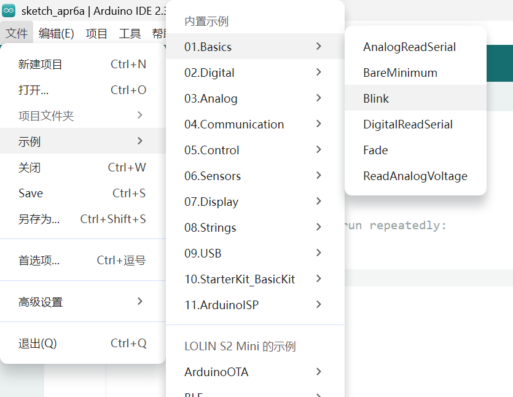
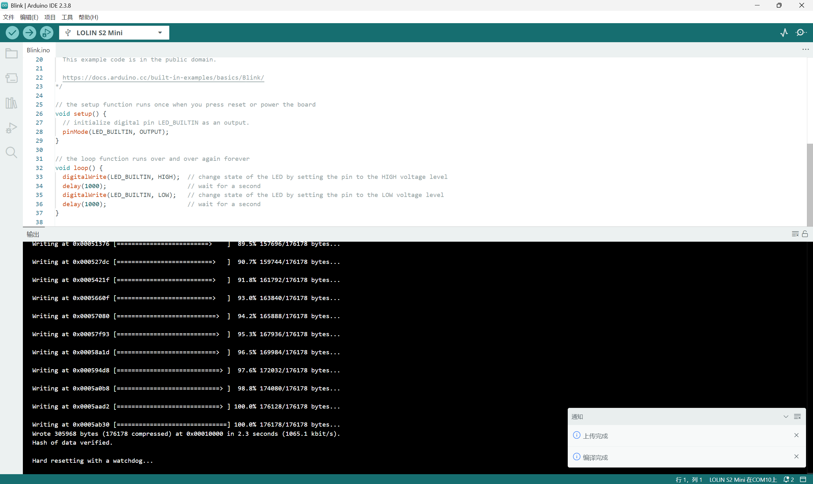

1. Arduino IDE入门操作
学习Arduino IDE的基础使用流程，完成软件安装、环境配置与程序上传的全流程实操，掌握嵌入式开发的基础工具链。
- Arduino IDE 软件安装、环境配置与板型选择（Uno/Nano/ESP32）
- 串口监视器配置与使用（波特率、数据格式）
- 程序上传流程与常见上传失败问题排查
- IDE内置示例程序的查看与运行（如Blink、Breathe）
基础示例代码（LED闪烁效果）
Arduino IDE提供的呼吸灯实例代码位置截图

// the setup function runs once when you press reset or power the board
void setup() {
// initialize digital pin LED_BUILTIN as an output.
pinMode(LED_BUILTIN, OUTPUT);
}
// the loop function runs over and over again forever
void loop() {
digitalWrite(LED_BUILTIN, HIGH); // change state of the LED by setting the pin to the HIGH voltage level
delay(1000); // wait for a second
digitalWrite(LED_BUILTIN, LOW); // change state of the LED by setting the pin to the LOW voltage level
delay(1000); // wait for a second
}
Arduino IDE编译上传界面截图

Arduino IDE程序编写与上传界面，展示开发调试过程。
LED闪烁程序运行效果
基于Arduino IDE编写的LED闪烁程序运行效果，LED按照1秒间隔交替亮灭。
2. ESP32开发板的基础功能与应用
学习ESP32开发板核心功能的使用方法，掌握数字/模拟I/O、串口、WIFI、舵机等基础模块的控制逻辑。
① 串口通信：Serial.begin()/Serial.print() 实现数据打印与调试
先留模板，后加
② 数字输出/输入：pinMode()、digitalWrite()、digitalRead() 控制LED/按键
数字输出代码：
#define LEDPIN 8
void setup() {
pinMode(LEDPIN,OUTPUT);
}
void loop() {
digitalWrite(LEDPIN,HIGH);
delay(100);
digitalWrite(LEDPIN,LOW);
delay(100);
}
源文件（插入下载链接）
数字输入代码：
#define BUTTONPIN 40
//初始化一个全局变量，用来存储按钮的状态。
int in;
void setup() {
// put your setup code here, to run once:
//设置端口为输入。
pinMode(BUTTONPIN,INPUT);
//以9600波特率，打开串口
Serial.begin(9600);
}
void loop() {
// put your main code here, to run repeatedly:
//数字读设置好的端口，存到in。
in = digitalRead(BUTTONPIN);
//串口输出in（也就是发送给电脑），这样在电脑上的Arduino IDE上可以看到in的结果了。
Serial.println(in);
//延迟以下，等待硬件执行
delay(100);
}
源文件（插入下载链接）
③ 模拟输入/输出：analogRead()（读取电位器）、analogWrite()（PWM控制）
模拟输入代码：
#define APIN 4
int in;
void setup() {
// put your setup code here, to run once:
//打开串口，设置波特率115200
Serial.begin(115200);
//set the resolution to 12 bits (0-4096)
analogReadResolution(12);
}
void loop() {
//从模拟端口读取电压采样值
in = analogRead(APIN);
//把收到的数据（存在in里面）发出去。
Serial.println(in);
delay(100);
}
源文件（插入下载链接）
模拟输出代码：
#define APIN 40
void setup() {
//设置分辨率
analogWriteResolution(10);
}
void loop() {
//输出
analogWrite(APIN,1023);
delay(100);
analogWrite(APIN,768);
delay(100);
analogWrite(APIN,512);
delay(100);
analogWrite(APIN,256);
delay(100);
analogWrite(APIN,128);
delay(100);
analogWrite(APIN,64);
delay(100);
}
源文件（插入下载链接）
④ WIFI功能：连接本地网络、TCP/UDP通信、HTTP请求（基础模板）
WiFi控制LED亮灭代码
#include
const char *ssid = "chen iQOO Z10x";
const char *password = "Lcyyc9426";
WiFiServer server(80);
void setup() {
Serial.begin(115200);
pinMode(15, OUTPUT); // set the LED pin mode
delay(10);
// We start by connecting to a WiFi network
Serial.println();
Serial.println();
Serial.print("Connecting to ");
Serial.println(ssid);
WiFi.begin(ssid, password);
while (WiFi.status() != WL_CONNECTED) {
delay(500);
Serial.print(".");
}
Serial.println("");
Serial.println("WiFi connected.");
Serial.println("IP address: ");
Serial.println(WiFi.localIP());
server.begin();
}
void loop() {
WiFiClient client = server.accept(); // listen for incoming clients
if (client) { // if you get a client,
Serial.println("New Client."); // print a message out the serial port
String currentLine = ""; // make a String to hold incoming data from the client
while (client.connected()) { // loop while the client's connected
if (client.available()) { // if there's bytes to read from the client,
char c = client.read(); // read a byte, then
Serial.write(c); // print it out the serial monitor
if (c == '\n') { // if the byte is a newline character
// if the current line is blank, you got two newline characters in a row.
// that's the end of the client HTTP request, so send a response:
if (currentLine.length() == 0) {
// HTTP headers
client.println("HTTP/1.1 200 OK");
client.println("Content-type:text/html");
client.println();
// the content of the HTTP response
client.print("Click here to turn the LED on pin 15 on.
"); client.print("Click here to turn the LED on pin 15 off.
"); client.println(); break; } else { currentLine = ""; } } else if (c != '\r') { currentLine += c; } // Check to see if the client request was "GET /H" or "GET /L": if (currentLine.endsWith("GET /H")) { digitalWrite(15, HIGH); } if (currentLine.endsWith("GET /L")) { digitalWrite(15, LOW); } } } client.stop(); Serial.println("Client Disconnected."); } }
源文件（插入下载链接）
"); client.print("Click here to turn the LED on pin 15 off.
"); client.println(); break; } else { currentLine = ""; } } else if (c != '\r') { currentLine += c; } // Check to see if the client request was "GET /H" or "GET /L": if (currentLine.endsWith("GET /H")) { digitalWrite(15, HIGH); } if (currentLine.endsWith("GET /L")) { digitalWrite(15, LOW); } } } client.stop(); Serial.println("Client Disconnected."); } }
⑤ 舵机控制：Servo库使用、角度控制与精准定位
先留模板
3. 嵌入式编程练习
利用ESP32开发板的多种基础功能，结合课堂发放的元器件，设计并实现一个综合应用（示例：WIFI控制舵机）。
练习目标
融合至少两种ESP32基础功能（如WIFI + 舵机、数字输入 + WIFI、模拟输入 + 数字输出等），完成一个具备实际交互逻辑的小项目。
常见问题及解决方法
- 问题1：程序上传失败，提示“端口未找到”
解决方法：检查USB数据线连接、在Arduino IDE中正确选择串口（工具->端口）、安装对应主板驱动 - 问题2：LED无反应，程序无报错
解决方法：检查引脚定义是否与实际焊接一致、LED正负极是否接反、电路是否存在虚焊 - 问题3：LED闪烁频率异常
解决方法：调整delay延时参数、检查主板时钟频率是否正常、确认程序中循环逻辑无错误